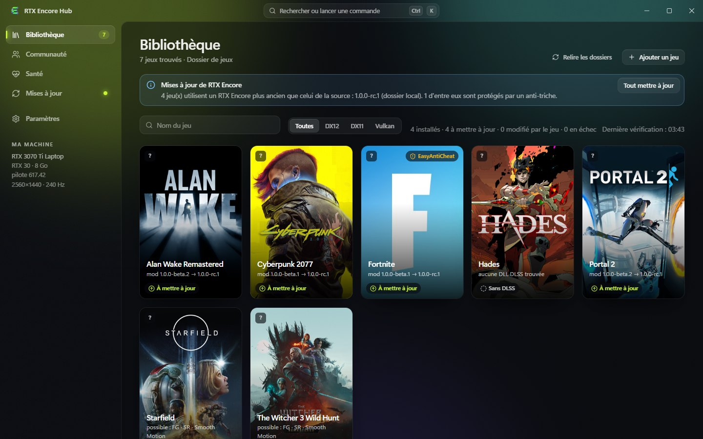
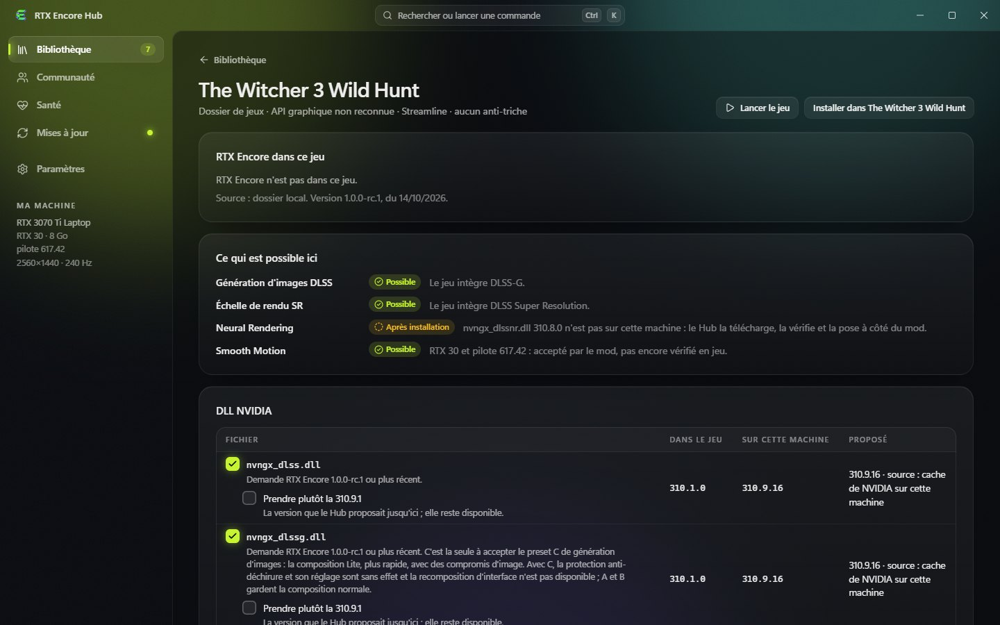
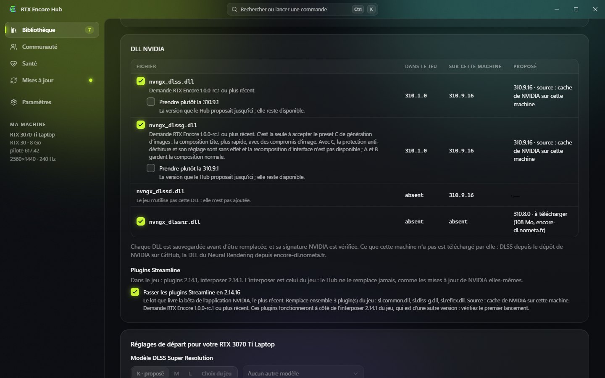

Plus d’images.
Plus de jeux.
RTX Encore.
RTX Encore 2.3.0 apporte le Neural Rendering sur l’image finale, les vecteurs de mouvement du jeu par défaut, une nouvelle console en jeu et FSR 1 avec prise en charge du HDR. DirectX 12 · DirectX 11 · Vulkan.
Intel XeSS / XeFG, Pre-SR, le NR fovéal et Smooth Motion sur RTX 20 restent expérimentaux. La compatibilité dépend du jeu, de l’API graphique et des runtimes. Signaler un problème.
Windows 10 et 11, x64 · douze langues · s'installe sans droits d'administrateur
RTX Encore 2.3.0 et Hub 2.3.0
La compatibilité dépend du jeu, de l’API, du GPU et des runtimes admis. Le Neural Rendering et les chemins expérimentaux conservent les limites décrites dans leurs guides. Aucun nouveau gain universel de FPS n’est annoncé.
Neural Rendering sur l’image finale
Traitez les images compatibles après les effets du jeu, avant la génération d’images et l’affichage, en DirectX 12, DirectX 11 et Vulkan. Des entrées scène/HUD séparées compatibles permettent de préserver le HUD ; un HUD déjà intégré à la scène est traité avec elle. Une à quatre passes, NR fovéal et HDR sur les chemins compatibles. En Vulkan, choisissez Image finale avant le lancement ou redémarrez après la bascule. Le guide NR détaille les combinaisons prises en charge.
Vecteurs de mouvement du jeu par défaut
Pour la génération d’images ajoutée aux jeux avec DLSS Super Resolution mais sans DLSS Frame Generation, Game motion vectors utilise les vecteurs disponibles du jeu en DirectX 12, DirectX 11 et Vulkan, avec repli automatique vers l’estimation RTX Encore. Ils alimentent aussi le NR Image finale compatible. Les choix explicites existants sont conservés. Les chemins DX11/Vulkan utilisant les entrées du jeu existaient déjà ; la 2.3.0 expose ce choix commun et en fait le défaut. Les cinq choix sont désormais affichés de façon cohérente dans le mod et le Hub.
Une nouvelle console en jeu
Navigation réorganisée, cartes de moteurs plus lisibles et pipeline de traitement visible pour retrouver les réglages de reconstruction, génération d’images, NR et performances. Le NR présente l’apparence globale, les réglages par passe et des profils multipasses complets.
FSR 1 rejoint NIS, HDR compris
AMD FidelityFX Super Resolution 1 rejoint NVIDIA Image Scaling pour les jeux sans DLSS. Les chemins de présentation DirectX 11, DirectX 12 et Vulkan compatibles acceptent SDR, HDR10 et scRGB. La netteté spatiale se règle à chaud. FXAA/SMAA avant ou après la mise à l’échelle restent limités au DirectX 11 SDR. Choisissez une résolution fenêtrée inférieure, au même format d’image, avec un agrandissement strict jusqu’à 2x par axe.
Looks NR et exposition
Sept looks sont disponibles dans le mod et le Hub : Standard, Discret, Naturel, Cinématique, Visages, Peau douce et Référence NVIDIA. Un look modifie l’apparence et remet les surcharges d’apparence par passe sur Global, sans changer le nombre de passes, les modèles, la résolution ni l’exposition. L’exposition NR propose Jeu, Automatique, Mesurée et Manuelle pour les entrées DLSS linéaires scène compatibles. Une nouvelle configuration utilise Automatique ; un fichier existant sans cette clé conserve Jeu.
Comparer l’image et son coût
Le laboratoire Image et performances compare Post-SR, Pre-SR et Image finale, avec captures, mesures et export. Le Hub affiche les placements sélectionnés sur les cartes de comparaison. Comparez des conditions identiques ; le temps GPU NR mesure le traitement NR, pas tous les transferts ni le pipeline graphique complet.
Cadence XeFG plus sélective
À partir de X3, le mode automatique attend des intervalles durablement irréguliers avant d’intervenir et conserve une correction seulement si elle améliore la régularité dans son budget de perte des FPS de base. Il relâche la contrainte et rétablit une correction efficace si nécessaire. Le mode manuel expose un budget de 0 à 30 %, la détection et les ajustements automatiques, à chaud. Le mode automatique utilise un budget de 4 %.
RTX Encore Hub 2.3.0
Le Hub associé reconnaît les archives FSR 1 stables et les proxy/ASI installés, propose Game motion vectors, l’exposition NR et la cadence XeFG manuelle, tout en respectant les versions anciennes du mod. L’installation guidée prend en charge NIS/FSR 1 et leur AA applicable. Le schéma communautaire accepte Image finale et les nouvelles commandes XeFG partagées. NIS, Overlay Studio, options Tensor Cores et choix des composants par fichier restent disponibles.
Le Discord de RTX Encore est ouvert
RTX Encore 2.3.0 apporte le Neural Rendering sur l’image finale, les vecteurs de mouvement du jeu par défaut, une nouvelle console en jeu et FSR 1 avec prise en charge du HDR.
Coûts GPU mesurés, pas des gains de FPS globaux. FG : benchmark isolé, optimisations désactivées puis activées, sortie identique dans les tests de référence. SR : mesures en jeu, image très proche. NR : la précision Fast échange un peu de fidélité contre de la vitesse. Ces mesures antérieures portent sur les optimisations conservées en 2.1.0, sans nouveau benchmark des binaires de release.
Le Neural Rendering, avant et après
Le Neural Rendering utilise le réseau de NVIDIA pour modifier une image compatible à l’étape SR ou, avec Image finale, après les effets du jeu. Une à quatre passes, apparence par passe et HDR sur les chemins pris en charge. RTX Encore le fait tourner sur RTX 20, 30 et 40, avec ses propres optimisations RTX 30. Expérimental, désactivé par défaut.


The Blood of Dawnwalker en 2560 × 1440, génération d'images X4, NR 310.9.16 travaillant en 1472 × 828. L'overlay dans le coin en donne le coût : 181 FPS sans NR, 132 avec.
Référence NVIDIA → avec RTX Encore
Même traitement avant et après son optimisation. Pour les mesures en pourcentage, référence NVIDIA = 100 unités de temps GPU ; moins, c’est mieux. GPU et charges différents : ces gains ne s’additionnent pas.
RTX Encore Hub s'occupe de l'installation
Trouver les dossiers, accorder les versions de DLL, tenir les sauvegardes : le Hub le fait, et montre ce qu'il va faire avant de le faire.

Choisissez ce qui est installé
Le Hub 2.3.0 ouvre Choisir les composants avant chaque installation et mise à jour : le mod, chaque DLL NVIDIA, Streamline et les fichiers Intel, choisis séparément. Les fichiers décochés restent tels quels, et un composant ignoré s’ajoute plus tard depuis la fiche du jeu.
Lisser X3 / X4 : Automatique
Avec le mod 2.0.0, le mod apprend jeu par jeu si Streamline doit espacer X3 et X4. Le Hub montre ce qu’il a appris ; Mesurer de nouveau recommence.
Votre langue, en jeu aussi
Le Hub parle désormais douze langues (merci au rapporteur de l’issue 12), et Langue du menu du mod règle celle du menu en jeu, désormais en onze langues : Comme le Hub par défaut, jamais par-dessus une langue choisie en jeu à l’installation ou à la mise à jour.
Trouver un jeu avec Ctrl+F
Depuis n’importe quelle page du Hub 1.6.0,
Ctrl+Fsélectionne la recherche de jeux de la barre de titre.Restaurer le jeu peut aussi nettoyer
Une case décochée par défaut supprime aussi les réglages et journaux du mod, et son dossier privé de runtimes s’il ne contient que des fichiers du Hub. Merci au rapporteur de l’issue 8.
Mettre à jour les favoris uniquement
Le Hub 1.5.3 peut limiter les mises à jour groupées aux jeux favoris tout en gardant le statut global de la bibliothèque.
XeSS et XeFG Tensor Cores sur RTX 30/40/50
Commandes expérimentales indépendantes, désactivées par défaut. Le mod 1.5.3 admet NVIDIA 621.01 et 621.12 ; seule la configuration RTX 4090 / 621.01 antérieure est qualifiée en jeu.
V-Sync et preset RR F dans le Hub
Le Hub 1.5.3 propose V-Sync Jeu / Désactivée / Activée et le preset RR F. V-Sync exige un jeu DirectX compatible, exclut XeSS-FG et peut ajouter de la latence.
Les bons fichiers NVIDIA
DLSS, génération d'images et Streamline, les plus récents que le mod admet, acceptés seulement avec une signature NVIDIA valide.
La DLL du Neural Rendering
nvngx_dlssnr.dll 310.9.16, téléchargée et vérifiée.
Chaque réglage expliqué
Un formulaire pour rtx-encore.jsonc, grisé là où un réglage n'a pas d'effet sur votre carte.
Lancer et vérifier
Observe la première minute du jeu et dit ce qui s'est passé, avec un diagnostic prêt pour un signalement.
Profils de la communauté
Des réglages partagés par jeu, classés pour votre machine. Expérimental, peu testé.
À l'aise avec les autres mods
ReShade, OptiScaler et Special K gardent leurs noms de fichiers ; le Hub prend celui que le jeu charge vraiment.
Regarder avant d'installer
Ce que le Hub dit d'un jeu est déduit de ses fichiers, de votre carte et de votre pilote. Ce n'est pas la garantie qu'une fonction marche dans ce jeu, et aucune performance n'est mesurée.


Bien démarrer
- Téléchargez
RTX-Encore-Hub-Setup-<version>.exedepuis les publications et lancez-le : il s'installe pour votre compte seulement. Ou prenez le.zipportable, qui n'installe rien. - Ouvrez la fiche d'un jeu dans la Bibliothèque, lisez ce qui y est possible, puis Installer.
- Dans Santé, Lancer et vérifier contrôle la première minute. Quand un nouveau RTX Encore sort, Tout mettre à jour.
Soutenir le projet
RTX Encore et RTX Encore Hub sont gratuits et faits sur des soirées libres. Un soutien, mensuel ou ponctuel, aide à les garder gratuits et à les faire avancer.
Merci à nos sponsors : mennogreg, Scarhead666, MrMicko, et une personne qui préfère rester anonyme.